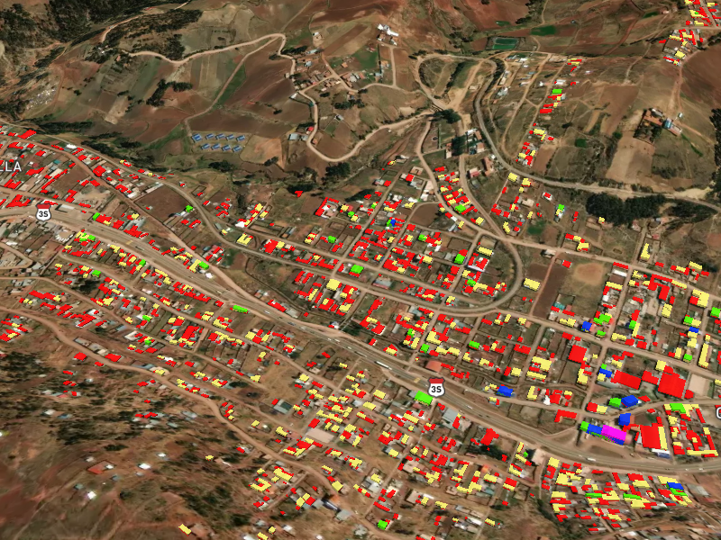

La municipalidad de Distrital de Poroy tiene catastro Urbano de acuerdo a ley Nro 28294, Objeto de la Ley creado po el Sistema Nacional Integrado de Información Catastral Predial, con la finalidad de regular la integración y unificación de los estándares, nomenclatura y procesos técnicos de las diferentes entidades generadoras de catastro en el país.
